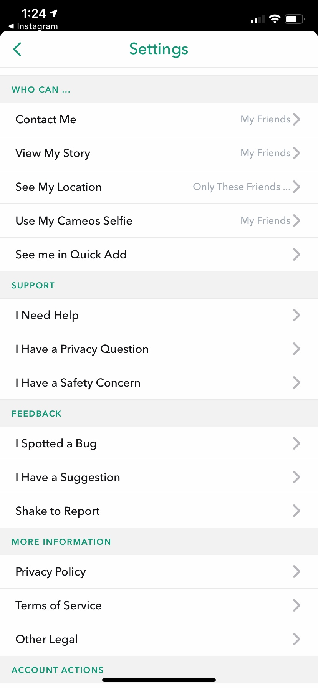

Cautions and Warnings
Age Limits
On the Appstore Snapchat is recommended to those 12+ years of age. The age warnings include; “infrequent/mild profanity or crude humour, infrequent/mild sexual content and nudity, infrequent/mild mature/suggestive themes and infrequent/mild alcohol, tobacco or drug use or references.”
Misuse
Snapchat is mainly used for texting and sending photos to friends. It can be misused by people by using it for selling explicit images or drugs, or bullying and harassment. Snapchat tries to prevent this but it still happens everyday. It's not endorsed by Snapchat so that type of content has to be seeked out or promoted through others. Due to this Snapchat has said that they can't guarantee the app will be a safe space so they ask you to follow the terms of service. If you violate the terms you can be banned from using the app.
Privacy and Security
Snapchat takes privacy and security very seriously. On their website under the privacy principles they make it clear that they treat the information of its users differently to other companies. “Snapchat’s designed so that people can only see the things you want to share, for as long as you want to share them.”
Abuse and Trolling
In an interview with ‘Teen Vogue’ they found that “Out of 10 teenagers who talked to Teen Vogue, only one claimed they had not been on the receiving end of harassment on Snapchat.” On snapchat there are many ways people can be bullied or harassed some of which include; screenshotting and posting private photos of someone on your story or sharing them with others privately and by using anonymous messengers available on the platform to bully people.
Images
There’s options to see the privacy policy and the terms of service within the apps settings. You can also ask questions through the setting menu on privacy and safety concerns.
